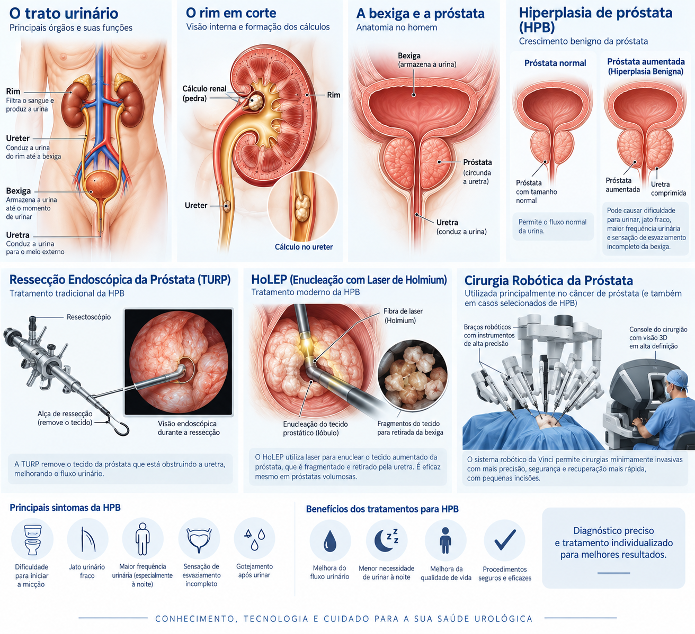

Tratamento clínico
Mudanças comportamentais e medicamentos permanecem opções importantes para muitos pacientes, escolhidos de acordo com sintomas e características individuais.
INFORMAÇÃO AO PACIENTE · MEDICINA BASEADA EM EVIDÊNCIAS
A escolha do tratamento considera intensidade dos sintomas, tamanho e anatomia prostática, repercussão urinária, comorbidades e prioridades do paciente, inclusive função sexual.
Mudanças comportamentais e medicamentos permanecem opções importantes para muitos pacientes, escolhidos de acordo com sintomas e características individuais.
Técnicas de enucleação endoscópica oferecem tratamento eficaz da obstrução prostática e têm papel consolidado entre as opções cirúrgicas contemporâneas.
Ablação por jato de água guiada por imagem é uma alternativa para pacientes selecionados; as diretrizes destacam resultados funcionais e potencial de preservação da ejaculação.
Nenhuma técnica é ideal para todos. Volume prostático, anatomia, uso de anticoagulantes, risco anestésico e prioridades funcionais influenciam a escolha.
Conteúdo informativo baseado em diretrizes contemporâneas. A indicação de exames ou tratamentos depende de avaliação médica individual e não pode ser definida apenas por informações disponíveis na internet.
Referência: EAU Guidelines on Male LUTS ↗